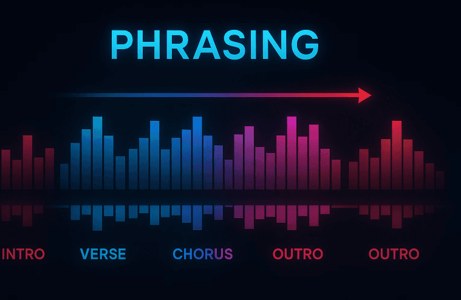
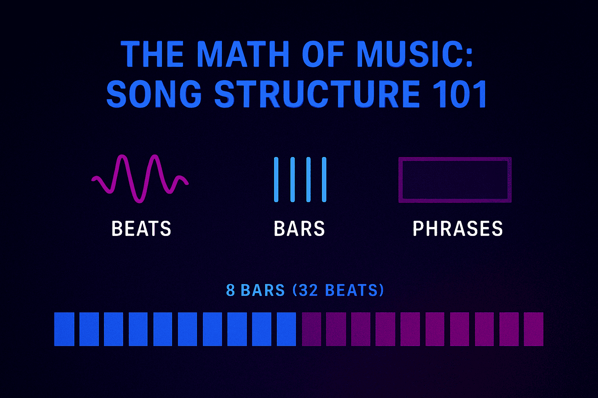
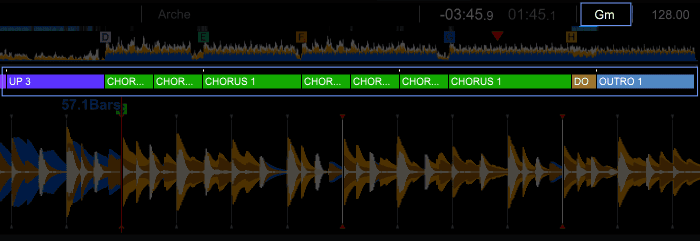
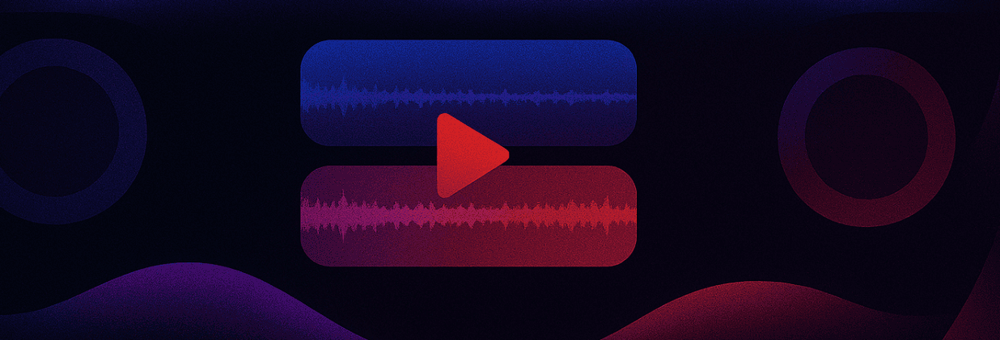
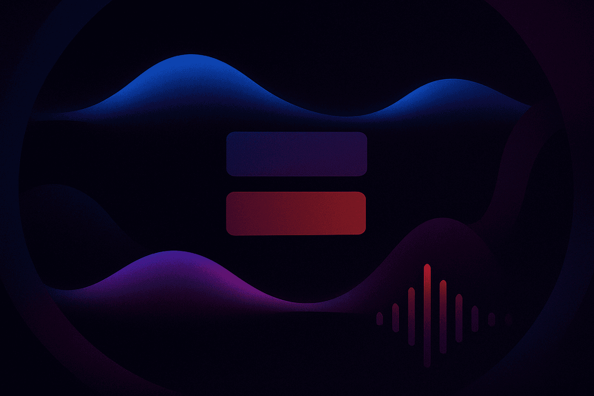

If you have ever listened to a professional DJ set and wondered how the songs seem to flow like one long, continuous journey, you aren’t alone. It wasn’t just luck. When I first started out, I could get the speeds of two songs to match, but my transitions still felt clunky. It wasn't until I unlocked the concept of DJ phrasing that my sets truly came alive.
Recomended Articles:
- Managing your DJ Music Library
- How to Beatmatch for DJs
- Harmonic Mixing for DJs
What You’ll Learn About DJ Phrasing
- The difference between simple beat matching and advanced phrase matching for a seamless mix.
- How to analyze musical structure to predict when to mix.
- Practical techniques for aligning phrases to create smooth transitions.
- How PulseDJ acts as your AI co-pilot to suggest tracks that make phrasing easier.
Staying in the Flow - Your Smart DJ Copilot

PulseDJ limits suggested tracks to a range of +/- 10 BPM from your currently playing track. This keeps your tempo consistent, meaning you don't have to make drastic pitch adjustments that could warp the track elements and ruin the phrase mix.
Whether you are mixing house music, hip hop, or open format, PulseDJ helps you find the right song at just the right time . By taking the guesswork out of track selection, you can devote your mental energy to aligning phrases, manipulating EQ, and creating those seamless transitions that keep the crowd moving.
Also, PulseDJ works by reading your library and history files but does not modify your audio files or crates, so your carefully curated cue points and beat grids remain safe.The Secret Sauce: Understanding Phrasing for DJ Sets

At its core, DJing is about more than just playing songs back-to-back. It is about managing energy and connecting musical elements in such a way that the listener doesn't notice where one track ends and the new track begins.
While beat matching ensures the tempos (BPM) of two tracks are locked, phrase matching ensures that the musical "sentences" align. Think of a song as a conversation. You wouldn't interrupt a sentence halfway through to start a new topic. In music, we wait for a natural pause or the end of a musical thought before introducing a new one.
Phrasing techniques involve aligning the structural segments of two songs - like the verse, chorus, or breakdown - so they change at the exact same time. When you are mastering phrase mixing, you are essentially layering the blueprint of one song over another to create smooth blends. This is the foundation of professional DJ transitions.
The Math of Music: Song Structure 101

To understand how phrases work, we have to look at the math. Almost all dance music, electronic music, pop music, and hip hop operates in groups of four.
- Beats: The steady pulse you tap your foot to.
- Bars: A group of four beats.
- Phrases: A group of bars.
In most modern electronic music, a standard phrase is 8 bars long (32 beats). These 8-bar sections are the building blocks of the entire track. Changes typically occur at the end of these phrases. A song introduces audible change - like a new melody, a bassline swap, or a vocal entry - usually at the start of a new 8-bar or 16-bar cycle. Musical themes are often repeated multiple times before a switch-up occurs.
Typical Electronic Music Structure
Here is a visual overview of how a typical house music or EDM track is built.
Section
Typical Length (Bars)
Characteristics
16 - 32 Bars
Minimal elements (drums, percussion) to help DJs mix tracks.
Verse/Build
16 Bars
Introduction of melody, vocals, or main themes.
Chorus/Drop
16 - 32 Bars
High energy. The main hook of the track.
Breakdown
8 - 16 Bars
Drums drop out. Atmospheric. Low energy.
16 - 32 Bars
Elements fade out. Perfect for bringing in the incoming track.
By identifying these sections, you can plan your mixes so the Outro of the current song overlaps perfectly with the Intro of the next track.
How to Identify a Phrase for DJs

You don't always need to count to 32 in your head (though it helps!). Favorite DJs develop an instinct for this. With a little practice, you will learn to determine phrases by ear. Here is how you can start:
Listen for the "One"
The first beat of a phrase is often heavier. It might be marked by a crash cymbal, a drum fill right before it, or the start of a vocal loop. When you listen carefully, you will hear that music resolves itself in blocks. These are the key elements that signal a change is coming.
Use Visual Tools
Modern DJ software provides beat grids and waveforms. If you look at the waveform, you can visually see where the track gets louder or quieter. These visual cues usually indicate the start of a new phrase.
Counting
If you are unsure, start counting the beats when a new song or musical element starts:
- 1, 2, 3, 4 (Bar 1)
- 2, 2, 3, 4 (Bar 2)
- ...
- 8, 2, 3, 4 (Bar 8)
If the song changes on the "One" of the next bar, you have found your phrasing structure.
The Phrase Matching Process

So, how do you actually incorporate phrase mixing into your DJ sets? It is just a matter of timing your play button. You might need to try this with a few tracks to get the feel for it.
- Analyze the Current Track: Listen to the song playing to the dance floor. Identify where the current phrase ends.
- Prepare the Incoming Track: Find the first beat (the downbeat) of the new track. Set cue points on the start of a phrase (usually the very beginning of the intro).
- Hit Play: Trigger the second track exactly when the first beat of a new phrase starts on the current track.
- Aligning Phrases: If you timed it right, the 8-bar phrases of both tracks will run parallel. When the current track hits a chorus or breakdown, the new track should introduce a new element simultaneously.
This makes the mix sound intentional. When the tracks start and change together, the audience feels comfortable because the familiar structure of the music is maintained. This allows you to mix songs without the energy dipping unexpectedly.
Stage Matching: Advanced Phrasing

There is a technique called stage matching which takes this a step further. This represents advanced techniques in the DJ world. This isn't just aligning beats; it's aligning energy.
For example, you might want to mix the breakdown of Track A into the breakdown of Track B. Or, you might mix the outro of a high-energy song into the intro of another high-energy song to maintain energy levels.
Stage matching requires you to know your track's structure inside and out. You want to avoid "clashing" - like playing vocals over vocals. By aligning phrases, you ensure that when the vocal of one song ends, the vocal of the next begins.
Common Phrasing Pitfalls
I think phrasing is one of those skills that really makes the difference between sounding like a beginner and a pro. Although, you can easily mess phrasing up if you're not careful!
- The Vocal Clash: If you don't phrase match, you might end up with the verses of two totally different songs playing at the same time. It sounds chaotic.
- Energy Dips: If you mix a high-energy drop into a quiet intro without proper phrasing, the energy on the dancefloor dies instantly.
- Odd Phrasing: Some pop music or older disco tracks have 6-bar or 10-bar phrases. These shorter phrases or irregular structures can throw off your mix if you aren't counting.
Using Technology to Assist DJ Phrasing
While phrasing involves counting and music theory, modern tools can help you focus on the creative possibilities rather than just the math. This is where having the right DJ software companion becomes essential.
Using tools that highlight key and BPM helps you choose tracks that will blend well together. If two tracks are in a compatible key and similar tempo, the phrase synced mix will sound harmonically pleasing, almost like a remix.
Some software, like rekordbox, can automatically analyse phrases in tracks, and display their structure in the interface. This makes it super easy to see how a song is phrased.
Why PulseDJ is Your Ultimate Phrasing Co-Pilot
Phrasing is one of the most important musical fundamentals, but it is much harder to execute if you select the wrong songs to mix. This is where PulseDJ revolutionizes your workflow.
PulseDJ acts as a smart DJ co-pilot that runs alongside your existing setup (like Rekordbox, Serato, or Traktor) . It doesn't just sit there; it actively helps you structure your set.
It's also completely free! Download PulseDJ now.
Intelligent Recommendations
When you load a track, PulseDJ analyzes the last three tracks you have played to recommend creative ideas for what to play next. Why does this matter for phrasing? Because PulseDJ recommends tracks based on historic track usage, key, and bpm.
Mixing phrases is significantly smoother when tracks are harmonically compatible. PulseDJ highlights suggested tracks in green if their musical key is a perfect match for the track you are currently playing. This visual indicator lets you identify harmonically compatible tracks instantly, ensuring that when you align your phrases, the melodies won't clash6.
Final Thoughts on Phrasing for DJs
Mastering phrase mixing is the turning point for many DJs. It transforms a set from a jukebox selection into a cohesive musical journey. By understanding song structure, counting your bars, and using visual tools, you can ensure every mix sounds professional.
However, technical skill is only half the battle. The other half is track selection. When you combine good phrasing technique with the intelligent, real-time suggestions from PulseDJ , you become unstoppable.
Start DJ phrasing with the ultimate advantage.
Download PulseDJ for free today and craft the perfect set, every time.
‹ How to Record a DJ Mix: The Ultimate Guide